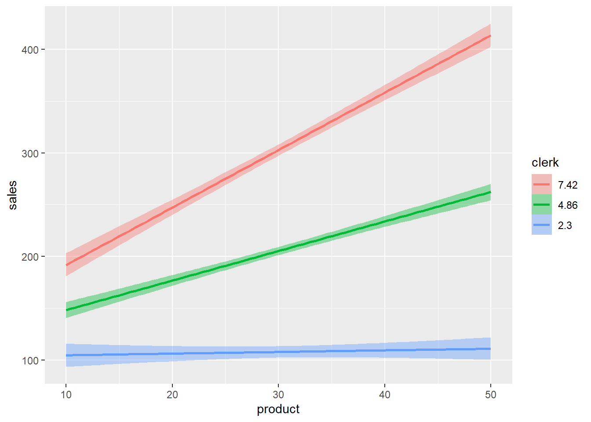
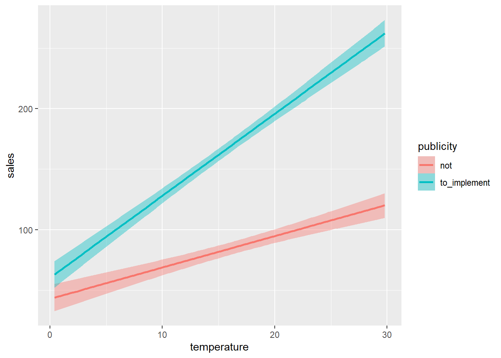
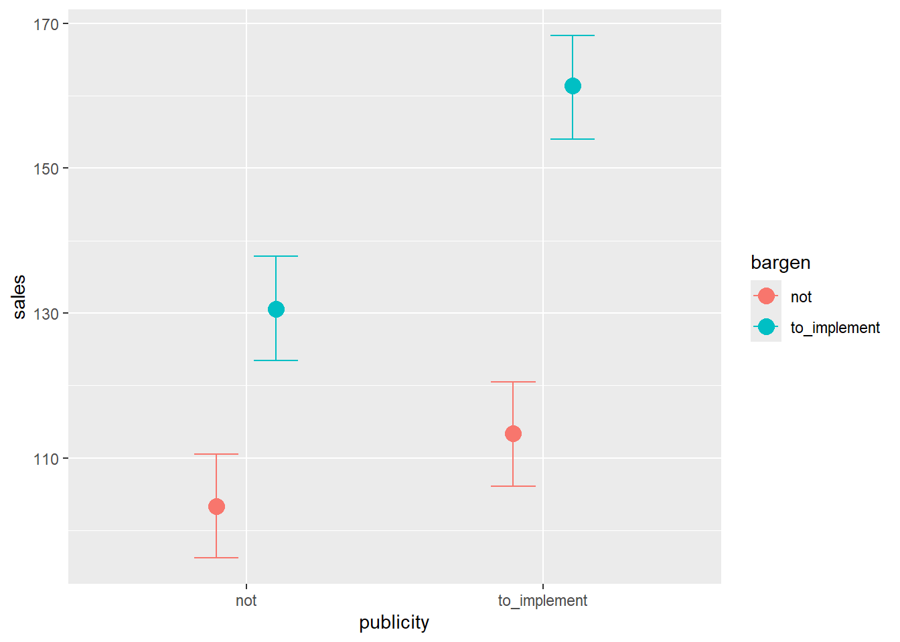
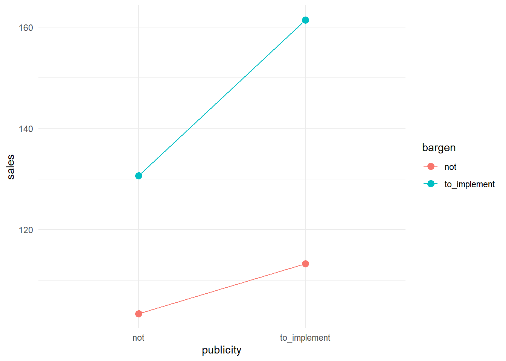
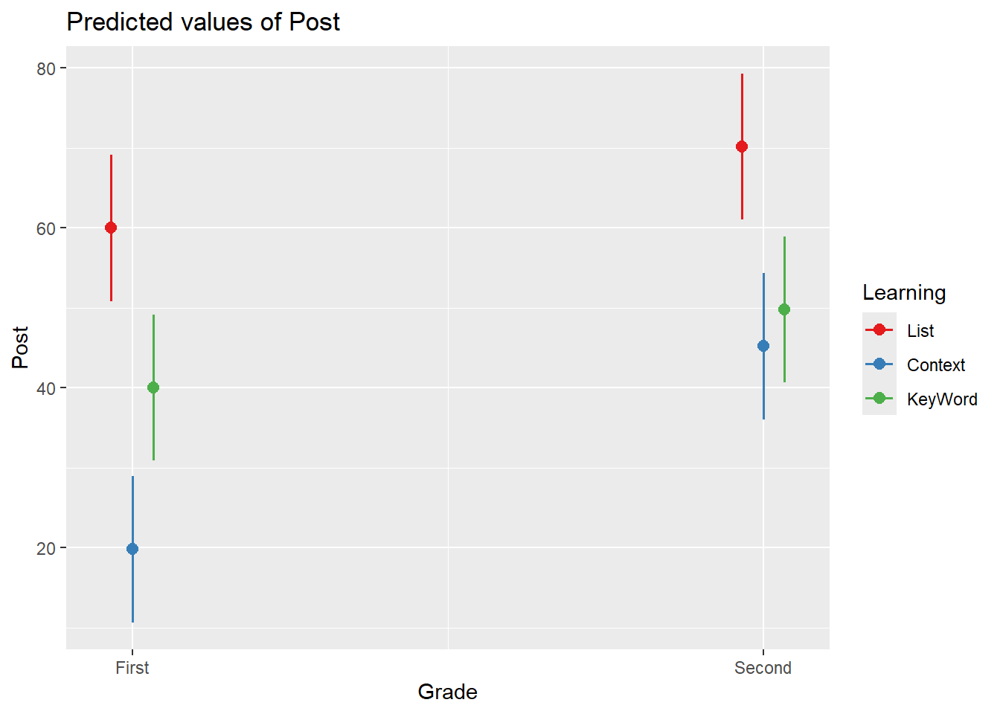

model1 <- brm(sales ~ product * clerk, gaussian(link = "identity"),
data = dat, seed = 123, refresh = 0, iter = 5000, chains = 2, silent =2)Week9: 重回帰分析 (3)：交互作用の解釈
事前の確認
この講義のRプロジェクトを開いていますか？
英数字で名前を付けた本日の講義のファイルを作成しましたか？
- .Rでも.Rmdでもどちらでも大丈夫です。
今日の目標
- 重回帰分析の交互作用項について概念的に理解できる
- 交互作用を含む重回帰分析を実装しその結果を適切に報告できる
交互作用
2つ以上の独立変数の組み合わせが従属変数にもたらす影響
質的変数はトリートメント・コーディングを行ったと仮定
一般化線形モデルでは、「説明変数同士の積」を説明変数として加えることで、交互作用を表現する
量的変数 × 量的変数
- 緑色（平均値）の線、赤色の線は右肩上がりになっている
plot(eff, plot = F)[[1]]
| sales | ||
|---|---|---|
| Predictors | Estimates | CI (95%) |
| Intercept | 88.19 | 63.23 – 112.05 |
| product | -2.26 | -3.01 – -1.51 |
| clerk | 6.49 | 2.01 – 11.02 |
| product:clerk | 1.05 | 0.91 – 1.19 |
| Observations | 100 | |
| R2 Bayes | 0.967 | |
量的 × 量的変数の交互作用の予測値
切片 + Product × (-2.26) + Clerk × (6.49) + （Product × Clerk） × 1.05
店員数（Clerk）によって、製品数（Product）の係数の値が変化する
| 量的 × 量的変数の交互作用 | |||||
| product | clerk | Estimate | Est.Error | Q2.5 | Q97.5 |
|---|---|---|---|---|---|
| 0 | 0 | 88.22 | 12.28 | 63.23 | 112.05 |
| 10 | 0 | 65.63 | 8.83 | 47.53 | 82.50 |
| 0 | 10 | 153.01 | 12.85 | 128.51 | 178.89 |
| 10 | 10 | 235.59 | 9.22 | 217.78 | 254.15 |
量的変数 × 質的変数
- データの読み込み
dat <- read.csv("sample_data/3-10-2-interaction-2.csv")コーディング（トリートメント）
- 他のコーディングでも分析可能である
dat$publicity <- factor(dat$publicity)
contrasts(dat$publicity) <- contr.treatment(2)
contrasts(dat$publicity) 2
not 0
to_implement 1model2 <- brm(sales ~ publicity * temperature, gaussian(link = "identity"),
data = dat, seed = 123, refresh = 0, iter = 5000, chains = 2, silent =2)- 宣伝アリの方が、切片（線の開始点）も傾きも大きいことが分かる
plot(eff2, plot = F)[[1]]
| sales | ||
|---|---|---|
| Predictors | Estimates | CI (95%) |
| Intercept | 42.80 | 31.39 – 54.62 |
| publicity2 | 17.49 | 1.15 – 33.52 |
| temperature | 2.59 | 1.94 – 3.23 |
| publicity2:temperature | 4.19 | 3.26 – 5.13 |
| Observations | 100 | |
| R2 Bayes | 0.904 | |
- 質的 × 量的変数の交互作用の予測値
df <- data.frame(
宣伝 = c("なし", "あり"),
`売り上げの予測値` = c(
"42.80 + temperature × 2.59",
"42.80 + 17.49 + temperature × (2.59 + 4.19)")
)
df %>%
gt() %>%
tab_header(title = "質的 × 量的変数の交互作用") %>%
cols_align(align = "center") %>%
tab_options(table.width = pct(100))| 質的 × 量的変数の交互作用 | |
| 宣伝 | 売り上げの予測値 |
|---|---|
| なし | 42.80 + temperature × 2.59 |
| あり | 42.80 + 17.49 + temperature × (2.59 + 4.19) |
- 気温の主効果は、宣伝がなかった時における気温の効果であることに注意。そのため、気温の主効果の数値だけではなく、交互作用を確認して結果を解釈する必要がある。
| 質的 × 量的変数の交互作用 | |||||
| publicity | temperature | Estimate | Est.Error | Q2.5 | Q97.5 |
|---|---|---|---|---|---|
| not | 0 | 42.89 | 5.91 | 31.39 | 54.62 |
| not | 10 | 68.80 | 3.29 | 62.26 | 75.37 |
| to_implement | 0 | 60.31 | 5.67 | 49.33 | 71.52 |
| to_implement | 10 | 128.06 | 3.13 | 121.93 | 134.27 |
質的変数 × 質的変数
dat <- read.csv("sample_data/3-10-1-interaction-1.csv")- コーディング（トリートメント）
dat$publicity <- factor(dat$publicity)
contrasts(dat$publicity) <- contr.treatment(2)
contrasts(dat$publicity) 2
not 0
to_implement 1dat$bargen <- factor(dat$bargen)
contrasts(dat$bargen) <- contr.treatment(2)
contrasts(dat$bargen) 2
not 0
to_implement 1model3 <- brm(sales ~ publicity * bargen, gaussian(link = "identity"),
data = dat, seed = 123, refresh = 0, iter = 5000, chains = 2, silent =2)- 宣伝も安売りもありの方が売り上げが最も大きいことが分かる
plot(eff3, plot = F)[[1]]
| sales | ||
|---|---|---|
| Predictors | Estimates | CI (95%) |
| Intercept | 103.32 | 96.18 – 110.51 |
| publicity2 | 10.05 | -0.22 – 20.17 |
| bargen2 | 27.35 | 17.33 – 37.46 |
| publicity2:bargen2 | 20.72 | 6.04 – 35.36 |
| Observations | 100 | |
| R2 Bayes | 0.601 | |
質的 × 質的変数の交互作用の予測値
- 宣伝も安売りもあった場合、二つの主効果に加え、交互作用の影響が加算される
| 質的 × 質的の交互作用 | ||
| 宣伝 | 安売り | 売り上げの予測値 |
|---|---|---|
| なし | なし | 103.32 |
| あり | なし | 103.32 + 10.05 |
| なし | あり | 103.32 + 27.35 |
| あり | あり | 103.32 + 10.05 + 27.35 + 20.72 |
- 得られた係数の結果と比較するとさらに分かりやすい
| 質的 × 質的変数の交互作用 | |||||
| publicity | bargen | Estimate | Est.Error | Q2.5 | Q97.5 |
|---|---|---|---|---|---|
| not | not | 103.34 | 3.68 | 96.18 | 110.51 |
| to_implement | not | 113.35 | 3.64 | 106.09 | 120.52 |
| not | to_implement | 130.65 | 3.70 | 123.49 | 137.85 |
| to_implement | to_implement | 161.30 | 3.70 | 154.02 | 168.31 |
下位検定
交互作用が有意だった場合に、交互作用の中身を詳しく検討するために単純主効果の検定を行う（検定の多重性に注意）。
単純主効果
ある要因の各水準における、別の要因の効果のこと
e.g., Publicity条件における、Bargen実施の有無（to_impement/not）の平均値差
多重比較
- 単純主効果において比較する1要因の水準が3以上などの場合、単純主効果の検定と合わせて行い、どの水準間に差があるかを調べる必要がある。
交互作用が有意
| sales | |||||
|---|---|---|---|---|---|
| Predictors | Estimates | std. Error | CI | Statistic | p |
| (Intercept) | 103.38 | 3.64 | 96.15 – 110.60 | 28.39 | <0.001 |
| publicity [2] | 9.94 | 5.15 | -0.28 – 20.16 | 1.93 | 0.057 |
| bargen [2] | 27.27 | 5.15 | 17.05 – 37.49 | 5.30 | <0.001 |
| publicity [2] × bargen [2] |
20.80 | 7.28 | 6.34 – 35.25 | 2.86 | 0.005 |
| Observations | 100 | ||||
| R2 / R2 adjusted | 0.604 / 0.592 | ||||

emmeans()関数を使って、下位検定を行う
#install.packages("emmeans")
library(emmeans)Welcome to emmeans.
Caution: You lose important information if you filter this package's results.
See '? untidy'bargenの単純主効果（publicityの各水準ごとにbargenの効果を調べる）
bargen by publicity（縦の比較）
publicityがnotの場合もto_implementの場合も条件間の差は有意
emmeans::contrast(
emmeans(model4, pairwise ~ bargen | publicity),
adjust = "bonferroni"
)publicity = not:
contrast estimate SE df t.ratio p.value
not effect -13.6 2.57 96 -5.297 <0.0001
to_implement effect 13.6 2.57 96 5.297 <0.0001
publicity = to_implement:
contrast estimate SE df t.ratio p.value
not effect -24.0 2.57 96 -9.335 <0.0001
to_implement effect 24.0 2.57 96 9.335 <0.0001
P value adjustment: bonferroni method for 2 tests publicityの単純主効果（bargenの各水準ごとにpublicityの効果を調べる）
publicity by bargen
bargenがto_implementの場合のみ条件間の差は有意
emmeans::contrast(
emmeans(model4, pairwise ~ publicity | bargen),
adjust = "bonferroni"
)bargen = not:
contrast estimate SE df t.ratio p.value
not effect -4.97 2.57 96 -1.930 0.1132
to_implement effect 4.97 2.57 96 1.930 0.1132
bargen = to_implement:
contrast estimate SE df t.ratio p.value
not effect -15.37 2.57 96 -5.968 <0.0001
to_implement effect 15.37 2.57 96 5.968 <0.0001
P value adjustment: bonferroni method for 2 tests - 報告の例
宣伝と安売りの有無、そしてそれらの交互作用が売り上げに与える影響を調べるため、回帰分析を行った。宣伝と安売りはトリートメント・コントラストでコーディングし、いずれも「なし」を0、「あり」を1とした。分析の結果、安売りおよび宣伝×安売りの交互作用の係数が有意であった（安売り: b = 27.27, 95% CI [17.05, 37.49], SE = 5.15, t = 5.30, p < .001；交互作用: b = 20.80, 95% CI [6.34, 35.25], SE = 7.28, t = 2.86, p = .005）。
交互作用が有意であったため、単純主効果の検定を行った。その結果、安売りがある条件では、宣伝の効果が有意であった（b = 15.37, SE = 2.57, t = 5.96, p < .001）。一方、安売りがない条件では、宣伝の効果は有意ではなかった（b = 4.97, SE = 2.57, t = 1.93, p = .113）。
また、安売りの単純主効果は、宣伝の有無にかかわらず有意であった（宣伝なし: b = 13.60, SE = 2.57, t = 5.29, p < .001；宣伝あり: b = 24.00, SE = 2.57, t = 9.33, p < .001）。これにより、宣伝の有無にかかわらず、安売りは売上向上に寄与する可能性が示唆された。
ハンズオンセッション
質的 × 質的（サムコントラスト）
dat <- read.csv("sample_data/Example4.csv")head(dat, 5) Grade Learning id Post
1 First List 1 73
2 First List 2 59
3 First List 3 63
4 First List 4 59
5 First List 5 46table(dat$Grade)
First Second
15 15 table(dat$Learning)
Context KeyWord List
10 10 10 dat$Grade <- factor(dat$Grade)
dat$Learning <- factor(dat$Learning, levels = c("List", "Context", "KeyWord"))- 各群ごとの平均
stats::aggregate(Post ~ Grade, data = dat, FUN = mean) Grade Post
1 First 39.93333
2 Second 55.06667stats::aggregate(Post ~ Learning, data = dat, FUN = mean) Learning Post
1 List 65.1
2 Context 32.5
3 KeyWord 44.9res <- stats::aggregate(Post ~ Grade*Learning , data = dat, FUN = mean)
res Grade Learning Post
1 First List 60.0
2 Second List 70.2
3 First Context 19.8
4 Second Context 45.2
5 First KeyWord 40.0
6 Second KeyWord 49.8- Ground Mean
mean(res$Post)[1] 47.5contrasts(dat$Grade) <- contr.sum(2)
contrasts(dat$Grade) [,1]
First 1
Second -1contrasts(dat$Learning) <- contr.sum(3)
contrasts(dat$Learning) [,1] [,2]
List 1 0
Context 0 1
KeyWord -1 -1model_sum <- lm(Post ~ Grade * Learning, data = dat)summary(model_sum)
Call:
lm(formula = Post ~ Grade * Learning, data = dat)
Residuals:
Min 1Q Median 3Q Max
-14.2 -6.7 -1.0 8.1 15.2
Coefficients:
Estimate Std. Error t value Pr(>|t|)
(Intercept) 47.500 1.807 26.285 < 2e-16 ***
Grade1 -7.567 1.807 -4.187 0.000328 ***
Learning1 17.600 2.556 6.887 4.02e-07 ***
Learning2 -15.000 2.556 -5.869 4.70e-06 ***
Grade1:Learning1 2.467 2.556 0.965 0.344071
Grade1:Learning2 -5.133 2.556 -2.009 0.055952 .
---
Signif. codes: 0 '***' 0.001 '**' 0.01 '*' 0.05 '.' 0.1 ' ' 1
Residual standard error: 9.898 on 24 degrees of freedom
Multiple R-squared: 0.762, Adjusted R-squared: 0.7124
F-statistic: 15.37 on 5 and 24 DF, p-value: 8.253e-07- 以下のような作図を行う場合、コーディングによって図中のパターンが変わることはない
#install.packages("sjPlot")
library(sjPlot)
Attaching package: 'sjPlot'The following object is masked from 'package:ggplot2':
set_themeplot_model(
model_sum,
type = "pred",
terms = c("Grade", "Learning")
)Ignoring unknown labels:
• linetype : "Learning"
• shape : "Learning"
係数の解釈
- 記述統計の値を参照して考えると分かりやすい
- Intercept: grand mean (47.5)
- GradeSecond: First - grand mean (39.93333 - 47.5)
- Learning1: List - grand mean (65.1 - 47.5)
- Learning2: Context - grand mean (32.5 - 47.5)
- GradeSecond:Learning1: {2 * (60 - 70.2) + (45.2 - 19.8) + (49.8 - 40)} ÷ 6
\[ \frac{2(M_{\text{リスト1}} - M_{\text{リスト2}}) + (M_{\text{文脈2}} - M_{\text{文脈1}}) + (M_{\text{キー2}} - M_{\text{キー1}})}{6} \]
- GradeSecond:Learning2: {(70.2-60) + 2 * (19.8-45.2) + (49.8 - 40)} ÷ 6
\[ \frac{(M_{\text{リスト2}} - M_{\text{リスト1}}) + 2(M_{\text{文脈1}} - M_{\text{文脈2}}) + (M_{\text{キー2}} - M_{\text{キー1}})}{6} \]
質的 × 質的（反復コントラスト）
library(MASS)
Attaching package: 'MASS'The following object is masked from 'package:dplyr':
selectcontrasts(dat$Grade) <- fractions(contr.sdif(2))
contrasts(dat$Grade) 2-1
First -1/2
Second 1/2contrasts(dat$Learning) <- fractions(contr.sdif(3))
contrasts(dat$Learning) 2-1 3-2
List -2/3 -1/3
Context 1/3 -1/3
KeyWord 1/3 2/3model_rep <- lm(Post ~ Grade * Learning, data = dat)summary(model_rep)
Call:
lm(formula = Post ~ Grade * Learning, data = dat)
Residuals:
Min 1Q Median 3Q Max
-14.2 -6.7 -1.0 8.1 15.2
Coefficients:
Estimate Std. Error t value Pr(>|t|)
(Intercept) 47.500 1.807 26.285 < 2e-16 ***
Grade2-1 15.133 3.614 4.187 0.000328 ***
Learning2-1 -32.600 4.426 -7.365 1.32e-07 ***
Learning3-2 12.400 4.426 2.801 0.009898 **
Grade2-1:Learning2-1 15.200 8.853 1.717 0.098867 .
Grade2-1:Learning3-2 -15.600 8.853 -1.762 0.090780 .
---
Signif. codes: 0 '***' 0.001 '**' 0.01 '*' 0.05 '.' 0.1 ' ' 1
Residual standard error: 9.898 on 24 degrees of freedom
Multiple R-squared: 0.762, Adjusted R-squared: 0.7124
F-statistic: 15.37 on 5 and 24 DF, p-value: 8.253e-07係数の解釈
- 記述統計の値を参照して考えると分かりやすい
- Intercept: grand mean
- Grade2-1: Second - First
- Learning2-1: Context - List
- Learning3-2: Keyword - Context
- Grade2-1:Learning2-1: (ContextにおけるSecond-First) - (ListにおけるSecond-First) = (45.2 - 19.8) - (70.2 - 60)
- Grade2-1:Learning3-2: (KeywordにおけるSecond-First) - (ContextにおけるSecond-First) = (49.8 - 40) - (45.2 - 19.8)
emmeans()関数で下位検定を行う場合も、どのコーディングをあてはめても結果は同じになります。
Note
- 2水準 × 3水準の交互作用でも係数の解釈は結構複雑になります。デザインはシンプルな方が解釈する側も分析をしやすいです。
次週までの課題
課題内容
小テストに向けて今回の内容を復習する。必ず手でコードを入力してRを実行する。
week8_data.csvのデータを用いて質的変数 * 量的変数、質的変数 * 質的変数、もしくは量的変数 * 量的変数のいずれかの交互作用を含む回帰分析を行う。記述統計や図示、結果の報告を行うこと。
提出方法
- TACT上で提出。
- 締め切りは今週の木曜日まで
参考文献
📚南風原（2002）『心理統計学の基礎―統合的理解のために』有斐閣アルマ
📚馬場（2019）『RとStanではじめる ベイズ統計モデリングによるデータ分析入門』講談社
🗣小島（2022）「外国語教育研究における（一般化）線形混合モデル：仮説に適したコーディング・モデリングを中心に」The 2021 Annual Conference on Vocabulary Acquisition